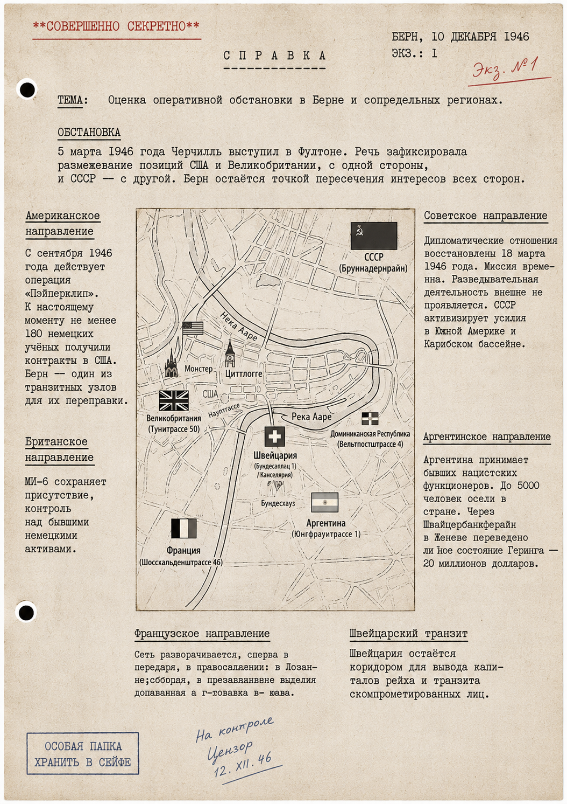
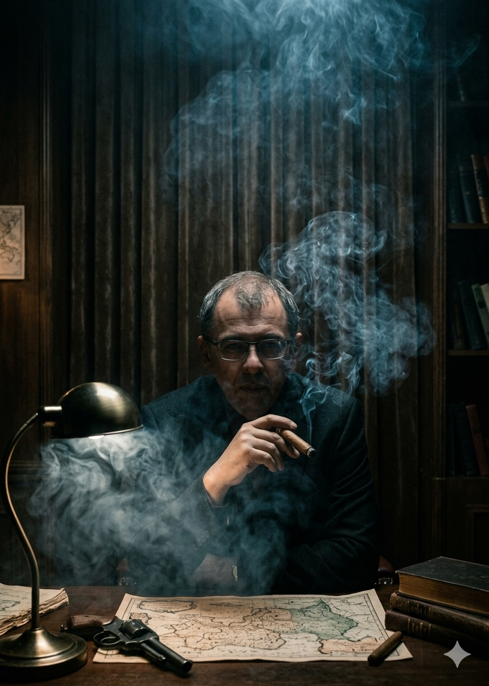
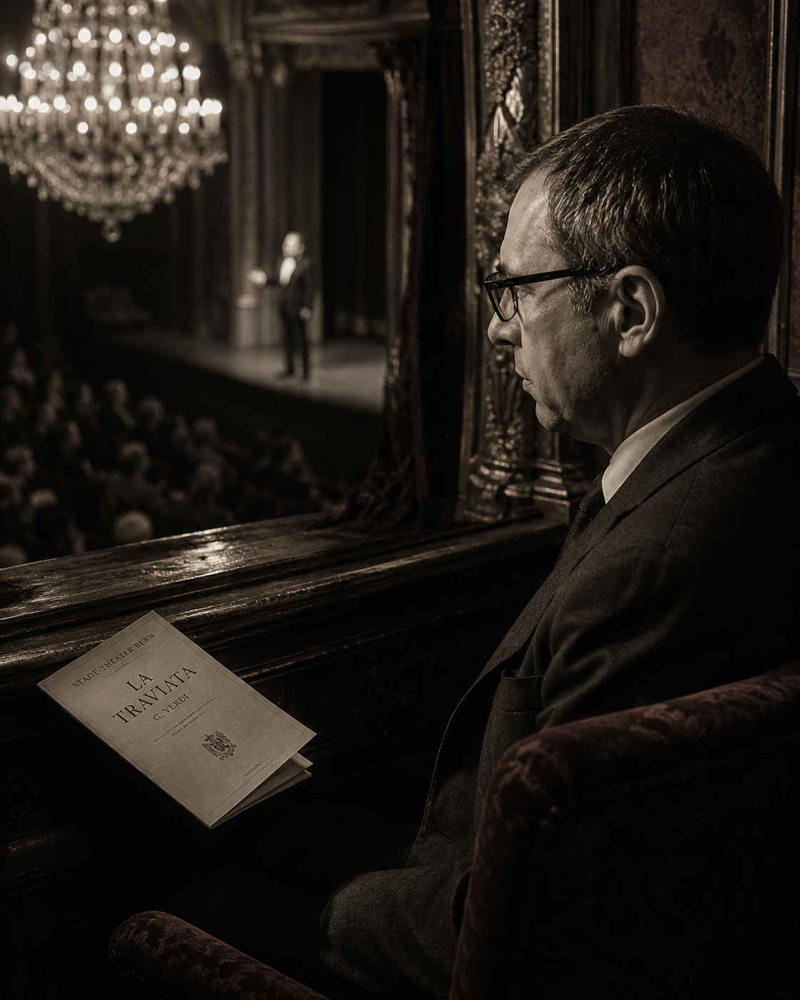
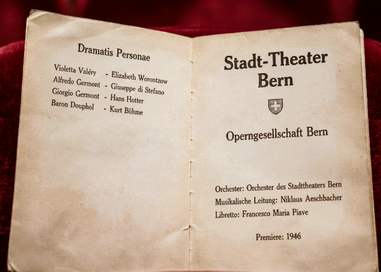
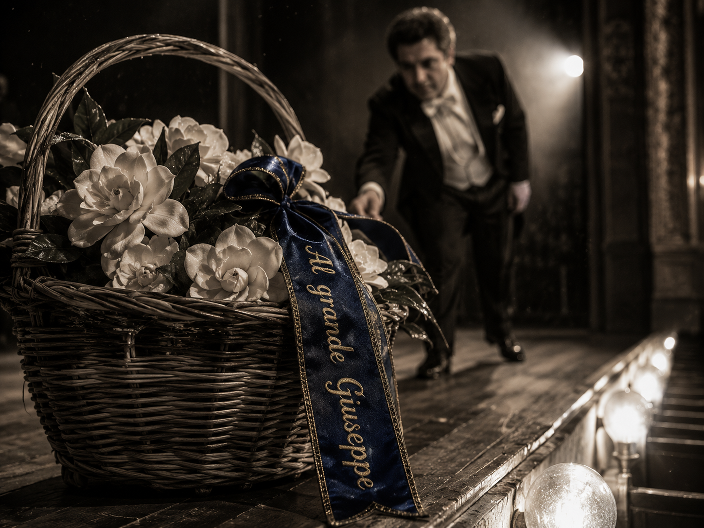
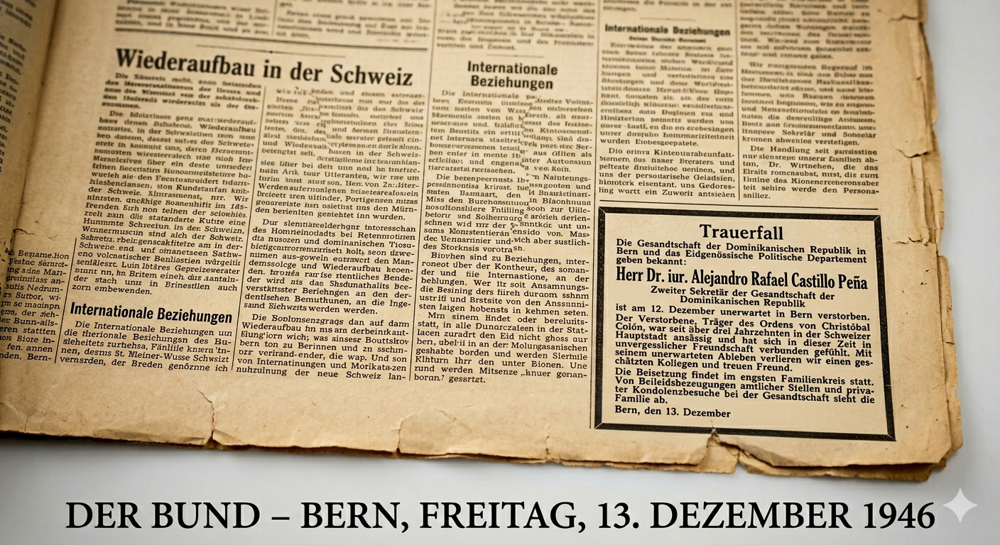
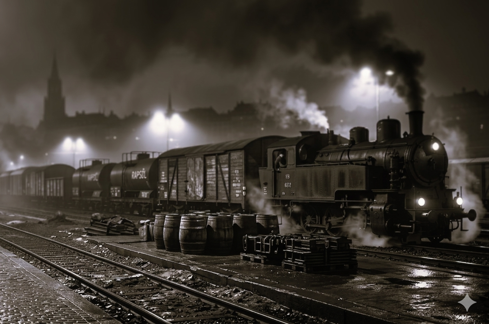
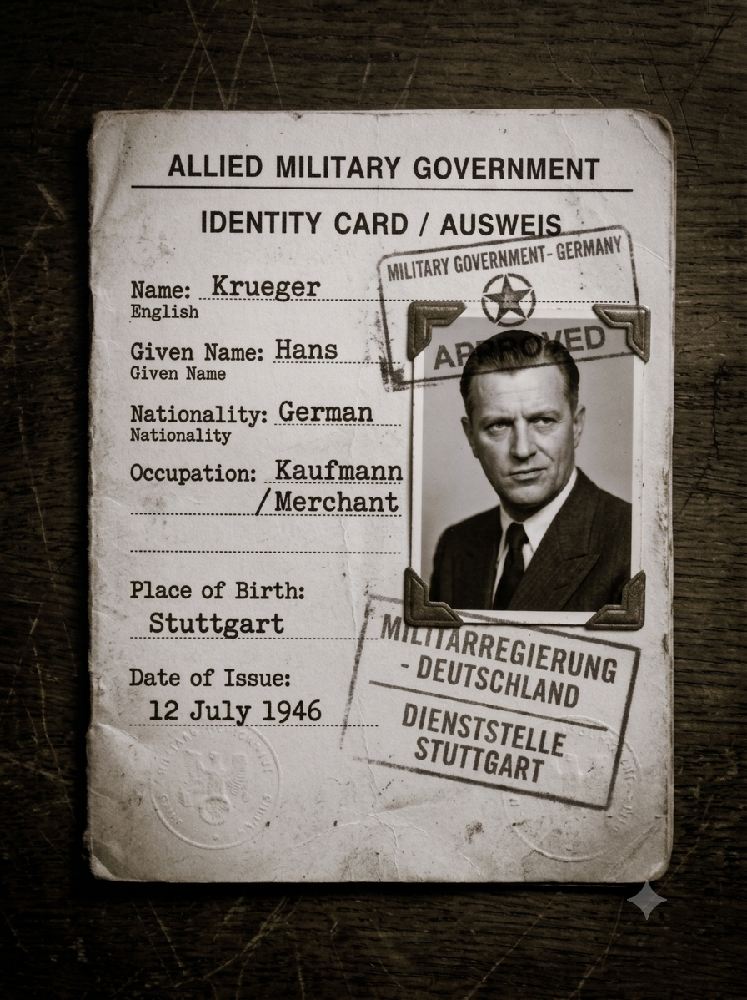

ВТОРОЙ ЗВОНОК
ИНТЕЛЛЕКТУАЛЬНЫЙ ШПИОНСКИЙ НУАР · ДЕКАБРЬ 1946 — МАЙ 1948
Пролог

К декабрю 1946 года Европа превратилась в гигантский шпионский полигон, где старые правила игры окончательно перестали действовать. Эпоха «аристократов духа», для которых шпионаж был делом чести, теснилась новой реальностью — технократической властью корпораций и теневых организаций. Старая школа уходила, уступая место холодному расчёту, где человек становился лишь винтиком в системе, а секретная информация — строчкой в балансе активов.
Послевоенная Швейцария оказалась в эпицентре этой трансформации: кантоны стали гигантским фильтром для золотых запасов и капиталов, переправляемых в Латинскую Америку. Завершение Нюрнбергского процесса и подписание Парижских договоров закрепили раздел Европы, но лишь обнажили раскол, который позже назовут Холодной войной.

СОВЕРШЕННО СЕКРЕТНО
ЦИРКУЛЯР № 447/С
12 декабря 1946
ВСЕМ ПОДРАЗДЕЛЕНИЯМ
НАПРАВЛЕНИЯ РАБОТЫ:
1. Контроль нелегальных маршрутов между Европой и Латинской Америкой (Аргентинская Республика, Доминиканская Республика, Гаити, Куба). Выявление и пресечение перемещения активов от структур бывшего рейха и личных средств чинов Абвера, СС, Гестапо. Особое внимание — каналам, использующим контрабанду как прикрытие для вывода золота, валюты и ценностей. Приоритет — Швейцария, Италия, Испания.
2. Сбор и блокировка материалов, способных повлиять на подготовку Парижских мирных договоров. Выявление лиц, использующих компромат для давления на процесс.
3. Переход на новые методы передачи разведданных. Активация ранее законсервированных агентов. Обновление оперативных каналов.
ЦЕНТР.
НОЧЬ
Берн, 12 декабря 1946 года, 23:07.
(Junkerngasse 63)
Пять сигар назад он начал ждать. Пепел не падал — он снимал его точно в последний момент, двумя короткими движениями пальцев. Без суеты. Без взгляда. Так же, как когда-то снимал людей с должностей, страны с карт, а вопросы повестки.
Он всегда успевал раньше. На шаг. На два. На жизнь вперед.
В кабинете было холодно. Не по забывчивости — по убеждению. В декабре он никогда не включал отопление. Холод дисциплинировал мысли. Холод не позволял расслабляться памяти. Деревянные панели стен, помнящие ещё эпоху великих потрясений, впитывали этот холод, становясь почти каменными. Каждая деталь в этом кабинете была продумана до мелочей.
Тонкая секундная стрелка Patek Philippe почти бесшумно резала время на одинаковые ломтики. Он ни разу не посмотрел на часы за этот вечер, но знал каждую минуту. Музыка закончилась. Граммофон продолжал вращаться, но игла лишь царапала дорожку.

Потом настала очередь Рихтера.
Allegro non troppo e molto maestoso [Не слишком быстро и очень величественно].
Тяжёлые первые такты медленно наполнили кабинет весом. Рихтер никогда не играл для слушателя — он играл для вечности. Ему нужно было ещё немного времени, чтобы подготовиться к тому, что должно было произойти.
На столе лежали пять коротких сигарных остатков — одинаковых, аккуратных, почти симметричных. Он всегда тушил сигару раньше, чем огонь добирался до пальцев. Так было правильно. Так было всегда. В этом была вся его жизнь: не дожидаться, пока огонь обожжет, а самому решать, когда пора остановиться.
Телефон молчал. Он открыл барабан револьвера. Проверил ещё раз, хотя проверять было нечего. Пять пустых камор. Одна внутри. Щелчок металла прозвучал неожиданно громко, разрезав музыку. Вот теперь он был готов.
Оставался второй звонок.
Вальтер вошёл тихо. Но старые половицы всё равно отозвались едва заметной вибрацией под ковром. Им было двести шестьдесят три года, и за это время они научились различать людей по весу их шагов. Вальтер промок насквозь.
От мокрого пальто и широкой спины поднимался пар. Дождь, казалось, ещё держался за него, не желая отпускать.
Он ничего не сказал. Только кивнул. Человек за столом не ответил. Даже не пошевелился. Свет зелёной лампы лежал на его лице неподвижно, как на бронзе памятника. Вальтер постоял ещё секунду, словно ожидая чего-то, но затем развернулся и вышел. Половицы снова дрогнули.
Дверь закрылась. Дом успокоился.
И только тогда он медленно открыл барабан револьвера. Пять пустых. Одна внутри. Несколько секунд он смотрел на патрон так, будто видел его впервые.
Второй звонок прозвенел не здесь. Там, где должен был.
Завтра газеты выйдут как обычно. Радио будет говорить обыденными голосами. Ещё девять с половиной сигар и город проснётся.
Он выключил лампу. И темнота сразу заняла своё место, навсегда закрыв этот эпизод.
СОВЕРШЕННО СЕКРЕТНО
ИЗ ОПЕРАТИВНОГО ДОНЕСЕНИЯ № 02/С
Исполнитель: Хозяин
13 декабря 1946
Гриф: «Лично Центру»
СОДЕРЖАНИЕ:
Каналы связи с Карибским направлением установлены. Резервные линии законсервированы. Новый способ передачи данных через культурное мероприятие будет проверен в течение 24 часов.
По доминиканской линии: контакт с объектом налажен. Информация о радарных системах собрана.
По аргентинской линии: объект идентифицирован. Требуется дальнейшая разработка.
УТРО
Берн, 13 декабря 1946 года, 7:43.
(Junkerngasse 63)
Половицы отозвались не сторожевым скрипом, а намеренно чётким стуком. Дверь поддалась без усилия. Гость вошёл без стука. Без приглашения. Впервые за долгие годы, со времён их первой встречи, он пришёл сам.
Хозяин пристально посмотрел в глаза. Ни моргая, ни спрашивая, ни ожидая объяснения. В этом взгляде был укор.
Гость переступил порог — и на полушаге задержался. Лампа слева. Глобус справа. Корешки на третьей полке — в том же порядке. Он наконец-то осознал, почему его кабинет в лондонском Вест-Энде так похож на кабинет Хозяина в Берне.
В руке — утренняя газета, вышедшая раньше обычного. Плотно сложенная вчетверо. Не для чтения. Как пропуск. Он не стал её разворачивать. Лишь чуть наклонил лист, указывая взглядом на крошечную заметку в нижнем углу.
Хозяин не стал искать глазами текст. Ему хватило угла наклона и той абсолютной тишины, с которой Гость на неё посмотрел. Утвердительно кивнул, разрешая непрошенное вторжение. Хозяин сидел тихо. Без приветствия. Без позы. Просто положил на центр стола разряженный накануне револьвер. Металл коснулся дерева ровно.
Гость потянулся во внутренний карман. Пальцы прошли мимо зажигалки. Маузер вышел первым — неприлично тяжёлый, повис в воздухе, пойманный за дуло. Небоевой хват. Инструмент, а не угроза. Ответ на револьвер, лежащий между ними. Так учили там, где цена ошибки измерялась не в днях, а в секундах.
Хозяин не посмотрел на ствол. Его взгляд скользнул поверх линз на сигарную коробку в руке Гостя, затем медленно перевёл на свою, лежащую у локтя.
Гость проследил за этой траекторией. Потёртый угол. Запах влажной кожи и горькой смолы. Но дело было не в марке. Дело было в том, что этот табак не продавали. Его растили в Ломас-де-Байре, сушили в пещерах и курили только те, кто прошёл через «Колу».
Холодный бернский воздух мгновенно наполнился памятью о том аде. Хозяин увидел, как дрогнул кадык Гостя. Они оба вспомнили. «Колу» — ту самую душную мясорубку севернее Сантьяго, где не было ни законов, ни жалости, только инстинкт и тяжёлый, липкий дым, который въедался в лёгкие навсегда. Тот, кто выжил в Коле, носил этот запах на себе, как шрам. Сигара в руке Гостя была не роскошью. Это был шибболет. Пропуск в клуб тех, кто видел дно и вернулся.
Хозяин медленно кивнул. Взгляд больше не сканировал угрозу.
Зажигалка щёлкнула у обоих почти одновременно. Пламя не коснулось табака — сначала обожгли торец. Медленное вращение. Триста шестьдесят градусов за две секунды. Торец покраснел ровным кольцом. Сигары поднялись ко рту. Первый затяг — длинный, ровный, на вдохе. Головы слегка наклонились вперёд. Выдох пошёл не вверх, а горизонтально, в разные стороны.
Два потока дыма, холодные и плотные, встретились в центре комнаты. Они не смешивались хаотично — они сплелись в единый жгут, потянувшись к потолку, воссоздавая в этом стерильном кабинете ту самую вязкую, непроглядную духоту.
Свет лампы не касался лиц. Он подсвечивал только границу слияния.
Ни слова. Гость опустил сигару, губы едва шевельнулись. Чётко, без мимики, только артикуляция, отточенная годами молчания:
— А-це-пе.
Пауза. Дым дрогнул.
Хозяин ответил так же губами, без звука, только формой рта, повторяя ритм Гостя:
— Мис-мо.
Тот же.
Гость кивнул. Не головой — плечами. Развернулся. Половицы снова дрогнули, но уже на прощание.
Дверь закрылась. Дом выдохнул.
На столе остался только дым, остывающий металл разряженного револьвера и вращающаяся пластинка.
Рихтер. Тот же концерт для фортепиано с оркестром. Такая же запись. Но как чертовски хорошо он сыграл в этот раз. Не для вечности. Для их двоих.
Игла коснулась бегунка. Тишина заняла своё место.
СОВЕРШЕННО СЕКРЕТНО
СРОЧНО
13 декабря 1946
По подтверждённым источникам, таможенный и пограничный контроль на швейцарско-итальянской границе не осуществляется в период с 20:00 пятницы до 5:00 понедельника.
Этот режим будет действовать с 13 по 26 декабря 1946 года.
АГЕНТ
ТРАВИАТА
Берн, 13 декабря 1946 года, 19:15.
(Kornhausplatz 20)
Берн встречал Рождество. Тринадцатое декабря выпало на пятницу.
Суеверные перекрестились, запирая двери, но театр был полон. Город пах хвоей, мёдом и мокрым камнем — снег обещали, но пришла оттепель, и мостовые блестели как зеркала. На углах продавали жареные каштаны, завернутые в газетные кульки, а в витринах магазинов стояли пирамиды из жестяных банок с гусиным паштетом и фарфоровые ангелы с позолотой.
Хозяин вышел из машины в четверть восьмого. Тёмно-синее пальто из верблюжьей шерсти, серая фетровая шляпа с полями, опущенными ровно настолько, чтобы скрыть глаза при встречном свете, чёрные лайковые перчатки — тонкие, как вторая кожа. Он чувствовал холод, просачивающийся сквозь лайку, но не морщился.
Лица он не прятал. Его лицо не состояло ни в одной картотеке. Он существовал только в агентурных донесениях под псевдонимом, который менялся каждые три месяца.
Он поймал косой взгляд сотрудника аргентинского посольства. Хозяин видел его прошлым летом в ресторане «Белвью» — тот слишком долго не отрывал глаз от портфеля.
Тогда он запомнил лицо: узкое, с длинным носом, левая бровь чуть выше правой. На лацкане его чёрного костюма поблёскивал значок дипломатического клуба.
Аргентина после войны превратилась в рассадник. Нацистское золото, фальшивые паспорта, люди с изменённой внешностью.
Сборище клопов, — подумал Хозяин. Разведки всего мира роились там. Но судьбы решались здесь.
После оперы нужно проверить, не идёт ли за ним хвост. Паранойя была не болезнью, а профессией.
Он вошёл в фойе.
Тепло ударило в лицо, смешав запахи — лакового паркета, дорогих духов, старого дерева от панелей. Швейцар в сине-золотой ливрее узнал его, учтиво поклонился. Хозяин отдал пальто, получил латунный номерок на скользком шнурке.
Программа спектакля лежала в левом внутреннем кармане. Тонкая книжица, пахнущая типографской краской и миндалём. Сегодня вечером у неё особая роль.
Ложа №3 — справа от сцены. Дверь тяжёлая, обитая бархатом, вытертым на сгибе. Он вошёл.
Здесь было всего два кресла, обитых старым пунцовым плюшем — колючим, протёртым до ниток. Справа — барьер из тёмного дерева, отполированный локтями сотен зрителей. Слева — пустое кресло. Он заказал два билета, но второй всегда оставался незанятым.
Хозяин сел. Плюш скрипнул. Он положил программу на барьер. Потом, в антракте, сложит её вдвое и оставит здесь.
Люстру в зале погасили, горел только газовый рожок над сценой. Оркестр настраивался — гобой взял «ля», скрипки отозвались. Гул голосов стихал. Хозяин окинул взглядом партер.
Занавес поднялся. Оркестр заиграл увертюру. Виолетту пела высокая немка с русской фамилией. Она изображала итальянскую куртизанку с французским акцентом. Хозяин мысленно поставил: техника — восемь, искренность — три.
Дальше он не слушал. Он ждал.

Тенор Ди Стефано должен был появиться только во втором акте. Сейчас на сцене шли бальные сцены — хор, танцы, мишура. Хозяин смотрел на дирижёра, на скрипачей, на контрабасиста — у того дрожал смычок, он был простужен. Мелкие детали, из которых складывалась безопасность.
Восемь минут первого акта, — подумал он. — Если что-то пойдёт не так, я уйду в антракте. Корзину отменят. Микрофильм пойдёт запасным путём.
На сцене Виолетта запела «Ah, fors'è lui» [Ах, может быть, это он]. Хозяин знал эту арию наизусть — каждую модуляцию, каждую фермату. Он помнил, как в 1938 году в Вене слушал «Травиату» с Юсси Бьёрлингом в партии Альфреда. Любимец публики тогда не знал, что через год его страна исчезнет с карты. Хозяин знал.
Он знал все про шпионское дело. И умел практически все.
Музыку он не умел. Музыку он не учил. Она пришла с ним из того прошлого, о котором он никогда не говорил.
Он знал музыку, а музыка знала его.
Занавес опустился. Свет зажёгся. Публика зашевелилась, закашляла. Хозяин взял программку — бумага была мягкой, чуть влажной от пальцев. Положил её так, чтобы со сцены было видно, а из зала почти нет.
Так же я делал в Лиссабоне, в сорок третьем, — пришло воспоминание. — Только тогда вместо программки был билет в кино, надорванный с левого края. Тот, кто взял, надорвал правый.
Через два часа высокопоставленный офицер Абвера заснул в своей ванне навсегда.

Занавес поднялся снова. Второй акт.
На сцене — загородный дом Виолетты: деревья, нарисованные на холсте, мебель красного дерева. Вошёл Альфред.
Джузеппе Ди Стефано был красив. Тридцать два года, тёмные глаза, тяжёлый подбородок, чёрные волосы, блестящие от бриолина. Он поздоровался с публикой лёгким поклоном.
Хозяин не смотрел на него. Он смотрел на программку, сохраняя маску сосредоточенного зрителя. Краем глаза он видел: Ди Стефано бросил взгляд на ложу. Взгляд задержался на программке на долю секунды.
Понял.
Ди Стефано не знал, что означал этот знак. Его проинструктировали: если увидишь сложенную программку — всё идёт по плану. Пой, как договорились.
Оркестр заиграл арию «De' miei bollenti spiriti» [Мой пылкий дух]. Ди Стефано начал петь. А потом подошёл к слову «ardore» [пыл]. Обычно теноры берут эту фразу с крещендо, ярко, победно.
Ди Стефано спел иначе. Он атаковал ноту пиано, почти шёпотом.
Звук родился сдавленный, придавленный — как вздох. Гласная «о» тянулась чуть дольше, и вибрато стало чуть быстрее.
Публика не заметила. Одна дама в партере шепнула соседке: «Какой грустный сегодня Альфред».
Но Хозяин знал каждое дыхание Ди Стефано. Никогда — ни разу — тот не пел этот отрывок тихо.
Понял. Подтверждает. Будет действовать.
Хозяин не двинулся. Лицо осталось каменным. Но внутри — короткая сухая радость, как глоток холодной воды.
На сцене Ди Стефано стоял вполоборота. И вдруг — как от отчаяния, как будто герой не мог справиться с горем — он пять раз провёл ладонью по волосам, откидывая их назад. Жест был вписан в роль. Но счёт не случаен.
Хозяин достал серебряный портсигар. На крышке — гравировка: две скрещённые сабли. Подарок от человека, которого уже нет. Большой палец нашёл защёлку. Он пять раз открыл и закрыл портсигар. Раз. Пауза. Два. Пауза. Три. Пауза. Четыре. Пауза. Пять.
Со стороны казалось, что он просто задумался, вертя портсигар.
Пятый город. Понял.
Значит, в Лионе Ди Стефано передаст микрофильм другому человеку. Цепочка замкнётся.
Третий акт. Портсигар закрылся. Виолетта умирала. Публика плакала. Занавес опустился, поднялся под овации.

На рампу вынесли корзину белых камелий. Ивовые прутья, лак, десятки бархатных цветов, белых как снег. Лента синяя — условленный знак. Шёлковая, широкая, с золотой вышивкой: «Великому Джузеппе от почитателя».
Ди Стефано подошёл, наклонился, взял корзину. Низко поклонился, отвязал от корзины ленту, аккуратно сложил в нагрудный карман. Поклонился. Теперь микрофильм у него.
Всё. Через неделю информация будет в Париже. Фотографии радаров. Всё, ради чего утонул в ванне второй секретарь.
Улица.
Проверка хвоста. Он перешёл на другую сторону, остановился у витрины — холодное стекло, отражение его лица с двумя газовыми рожками. Никого. Завернул за угол, зажёг спичку, посмотрел на пламя. Никого.
Вернулся к театру со стороны служебного входа — темно, пахнет мочой и углём. Простоял три минуты. Ни шагов.
Чисто.
Он вышел на главную улицу. Ночь. Туман. Колокола играли где-то далеко. На углу — ёлка с гирляндами, запах жареных каштанов и хвои.
Хозяин остановился у чугунной урны. Внутри — скомканная газета. Der Bund. 13 декабря. Он знал: на последней странице, мелким шрифтом, некролог. Второй секретарь доминиканского посольства скоропостижно скончался 12 декабря. Утонул в собственной ванне.
Но там не написано, что за день до этого он выпытал у Сандроса имя Хозяина: тот сознался, что вынес папку из посольства. Сандрос был слабым человеком. Когда доктор закричал на него, сердце Сандроса не выдержало — он просто не справился с допросом.
Машина подъехала бесшумно. Чёрный «Хорьх». Он любил её.
Вальтера рядом не было. Вальтер уже далеко, с другим паспортом. Вальтер своё дело сделал, его спина после вчерашнего купания второго секретаря больше не парит.
Да и дождя вчера не было.

СОВЕРШЕННО СЕКРЕТНО
ПЕРЕХВАТ № 04/Ф
13 ДЕКАБРЯ 1946
Шифрованное сообщение от объекта «Аргентинец» в Буэнос-Айрес. Дешифровано 13 декабря 1946 года.
ИСХОДНЫЙ ТЕКСТ (ПЕРЕВОД С ИСПАНСКОГО):
В Берне готовится акция по устранению объекта «А». Исполнитель — резидент «Вода» действует по заданию Сетки. Время акции — 13 декабря, предположительно в пределах городской черты.
ВЫСТРЕЛ
Берн, 13 декабря 1946 года, 22:15.
(Kornhausplatz 20)
Хозяин обернулся.
Дверца проезжавшего мимо автомобиля распахнулась на ходу.
На мокрую рождественскую брусчатку театральной площади тяжело вывалилось тело.
Вальтер.
СОВЕРШЕННО СЕКРЕТНО
ВЫПИСКА ИЗ ИНСТРУКЦИИ УЕ-64
...
СПОСОБЫ ОПОВЕЩЕНИЯ РЕЗИДЕНТОВ:
А) Оповещение через прессу (радио): в случае крайней необходимости и срочного характера оповещения допускается совершение правонарушения (акт вандализма, дорожное происшествие, поджог и др.), резонанс от совершения которого будет опубликован в новостях. Объекты и их соответствие кодам действий определяются и доводятся до резидентов каждые 6 месяцев.
...
ПЛАН «А»
Берн, 13 декабря 1946 года, 22:16.
(Kornhausplatz 20)
Он не подошёл к телу. Вальтер лежал на брусчатке, раскинув руки — театрально, ровно в луче единственного фонаря. Кровь растекалась под головой медленно, как патока. Рождественская ёлка на углу продолжала мигать. Шарманщик убрал инструмент и стоял, разинув рот. Кто-то закричал.
Хозяин развернулся и шагнул к «Хорьху». Дверца закрылась за ним с глухим, всасывающим звуком. Машина тронулась.
В салоне всё было готово. Дорожный саквояж стоял на полу, в нём — френч защитного цвета, бриджи, плотные ботинки на рифлёной подошве, шерстяной свитер с высоким воротником. Ни военный, ни штатский. Путешественник, каких тысячи на дорогах послевоенной Европы.
Он снял лакированные туфли. Вытащил из левого каблука камни разного веса и огранки — самая надёжная валюта в эти неспокойные времена. Из правого — маленький замшевый мешочек с кристаллами. Переложил тайники в ботинки, которые надел сейчас. Движения отточены до автоматизма.
Пальто, шляпу, перчатки, программку «Травиаты» — в саквояж. Саквояж через час отправится на дно Аре.
Через пять минут «Хорьх» остановился в переулке у полицейского участка на Крамгассе.
Участок был заперт. Пятница, тринадцатое, никого — полицейские разошлись по домам, надеясь на тихую ночь.
Хозяин вышел. В руке — монтировка из багажника. Подошёл к окну. Три рамы — одно большое окно, разделённое на три секции.
Перчатки уже на руках. Первый удар пришёлся в центр. Стекло треснуло перекрестием, разлетелось мелкими кубиками — и потянуло за собой соседнее стекло.
Второй удар — в оставшуюся раму. Осколки посыпались внутрь, на пол, на стол дежурного.
Всё. Двенадцать секунд. Он положил монтировку на подоконник — жест, почти ритуальный.
Потом растворился в темноте.
Утром газета Der Bund напечатает короткую заметку: «Вандалы разбили окна в полицейском участке на Кирхенфельдштрассе». Для обывателей это будет просто хулиганством. Но для посвящённых разбитое стекло и оставленная монтировка означали лишь одно.
Это был условный сигнал: «План А».
Эвакуация касалась не только Хозяина. Бернская сетка должна уйти на дно, минимум на двадцать один день. Накануне рождества это было непросто для семейных агентов: La situation oblige [Ситуация обязывает], — пронеслось у Хозяина в голове. Короткая, хлёсткая французская фраза. В острые моменты он мыслил не словами, а понятиями, и этот иностранный оборот лучше всего описывал жестокую необходимость момента.
Вариантов отхода было три. Летом — четыре. Каждый — остроумный, проверенный, привязанный к дню недели.
Пятница – это грузовой состав на маслобойню в Бари.
Отправление в полночь.

ПЕРЕХВАТ № 07/А
14 ДЕКАБРЯ 1946
Шифрованное сообщение из Берна в Буэнос-Айрес.
Дешифровано 14 декабря 1946 года.
ИСХОДНЫЙ ТЕКСТ (ПЕРЕВОД С НЕМЕЦКОГО):
Клиент вылетел. Груз в пути.
Маршрут: Берн — Бриг — Милан — Генуя.
Переход через границу обеспечен (окно до 26.12).
Получатель в Буэнос-Айресе подтверждён.
Общий вес по спецификации — 20 тыс. т.
Следующий транш — после подтверждения получения.
ПОСТАВЩИК
ИНСПЕКТОР
Грузовая станция Bern-Weyermannshaus,
13 декабря 1946 года, 23:34.
(в двух километрах от Bern-Hauptbahnhof)
Товарная станция Берна дышала угольной пылью и мазутом. Он вошёл через проходную, минуя сторожа — тот спал, накрыв лицо газетой.
Состав стоял под погрузкой. Цистерны с рапсовым маслом, деревянные бочки, запах жареных семечек и металла.
В кабине локомотива горел тусклый свет. Хозяин поднялся по лесенке, открыл дверь.
Машинист обернулся. Лет пятьдесят, лицо в морщинах, руки в мазуте. На столике — два стакана, заварка, кипяток.
В углу кабины, на свернутом брезенте, сидел человек в потёртом пальто. Бледный, с глубоко запавшими глазами. Нос горбинкой. Чувствовалось, что военный, и не из простых офицеров.
— Инспекция, — сказал Хозяин, предъявляя служебное удостоверение. Настоящее, с реальными печатями и подписью.
— Приготовьте паспорта и документы на груз. Кто этот господин?
Машинист побледнел. Забормотал что-то про родственника, про пароход в Генуе.
Человек в углу молча протянул немецкий паспорт на имя Ганса Крюгера, коммерсанта.
Хозяин молча листал страницы.
Вдруг машинист заговорил быстро, сбивчиво, умоляюще:
— Signor ispettore, per l'amor di Dio, non faccia il verbale. È mio cognato, ha prestato servizio, e ora si nasconde. Sono tempi così! Va solo fino a Milano, e lì prenderà la coincidenza per Genova, e poi... un piroscafo per Buenos Aires… [Синьор инспектор, ради всего святого, не составляйте протокол. Это мой шурин, он служил, а теперь скрывается. Такие времена! Он едет только до Милана, а там — пересадка до Генуи, а дальше — пароход до Буэнос-Айреса]
Хозяин поднял взгляд. Посмотрел на машиниста, потом на пассажира.
Пауза.
— Lei ha commesso gravi irregolarità. Presenza di un passeggero non dichiarato e mancanza della documentazione di carico. Sono tenuto a trattenere il convoglio e richiedere l'intervento della gendarmeria campale. [У вас серьезные нарушения. Наличие незадекларированного пассажира и отсутствие документации на груз. Я обязан задержать состав и запросить вмешательство полевой жандармерии]
Машинист схватил его за рукав, вернувшись на немецкий:
— Что угодно, господин инспектор! Только не это.
— Моя юрисдикция — весь маршрут до конечной станции, — отрезал Хозяин. — С учётом выявленных нарушений теперь я обязан провести сквозную проверку состава и сопровождающих лиц до самого Бари. Моя проверка внеплановая, поэтому, если не хотите, чтобы в управлении узнали о её причинах, держите рот на замке.
— Всё сделаю, — выдохнул машинист. — Всё, что скажете.
— Тогда продолжаем проверку. — Хозяин убрал удостоверение.
— Доложите маршрут.
Машинист, всё ещё дрожа, начал перечислять станции, график, сказал, что остановок кроме Милана действительно нет.
Немец сидел молча. А потом спросил:
— Мы могли раньше встречаться? Вы не служили в Лиссабоне? В 1943?
Его швабская манера говорить показалась очень знакомой.
Перевод с немецкого
РАПОРТ от 9 АПРЕЛЯ 1945
ОБ ИСПОЛНЕНИИ ПРИГОВОРА
9 апреля 1945 года в 06:00 на территории концлагеря приведён в исполнение смертный приговор, вынесенный военным трибуналом СС в отношении Вильгельма-Франца Канариса.
Казнь произведена через повешение. Осуждённый был раздет донага и помещён в железный ошейник, закреплённый на стропилах. Смерть наступила через 30 минут.
Тело кремировано. Личные вещи изъяты и направлены в РСХА.
ИСПОЛНИТЕЛЬ:
комендатура концлагеря Флоссенбюрг
ЛИССАБОН
Лиссабон, 2 марта 1943 года, 13:40
(Rua 1º de Dezembro 123)
Отель Avenida Palace. Высокие потолки, мраморные полы, запах страха и дорогого парфюма.
Заказ на устранение офицера связи Абвера пришёл от офицера Гестапо. Неожиданно и срочно.

К 1943 году противостояние между военной разведкой под руководством адмирала Канариса и партийной службой безопасности Гестапо достигло апогея. Гиммлер стремился взять под контроль всю разведывательную деятельность.
Ликвидация абверовского офицера связи в нейтральном Лиссабоне была частью этой внутренней борьбы за власть, влияние и ресурсы.
Для исполнения деликатного поручения немецкие головорезы не годились. Требовался индивидуальный исполнитель. И он нашёлся.
Вальтер был исключительно коммерческим: работал на тех, кто больше платит. И получил заказ, а агенты сетки — обеспечили контроль и отступы.
Вальтер тогда надорвал билет в cinematógrafo, а потом утопил майора связи в ванне — без крика, без крови. Как всегда.
Тот, кто сидел на веранде гостиницы и пил четвертую чашку Мазаграна, носил другой костюм, другую фамилию, другой статус.

Но глаза остались прежними — холодными, цепкими. И манера говорить не изменилась.
Йоахим фон Круге, Гестапо. Аристократ.
Фон Круге наблюдал за ситуацией оттуда, а Хозяин наблюдал за фон Круге. Это была единственная их встреча.
После этой неожиданной смерти кадрового разведчика и пропажи большого архива секретных документов позиции Канариса пошатнулись окончательно. Абвер постепенно терял самостоятельность, и к 1944 году фактически перешёл под контроль Главного управления имперской безопасности. А в апреле 1945 года бывший адмирал был казнен.
ПЕРЕХВАТ № 08/А
14 ДЕКАБРЯ 1946
Шифровка из Берна в Мадрид.
Дешифровано 14 декабря 1946 года.
ИСХОДНЫЙ ТЕКСТ (ПЕРЕВОД С ИСПАНСКОГО):
Груз следует по маршруту Берн — Бриг — Изолла — Генуя. Замена локомотива на итальянской стороне. В момент перецепки изъять содержимое вагона № 4. Подменить на равноценный по весу.
Исполнителю — действовать без свидетелей.
КУРРАТОР